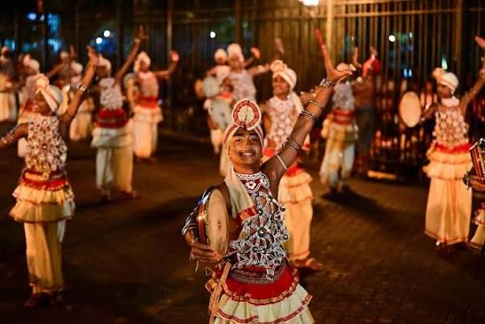

Religious & Cultural Events
Religious festivals and cultural events bring communities together.
Temples, devalayas and other religious places are important parts of the cultural landscape.
Traditional ceremonies, processions and community activities also contribute to the identity of Matara.
